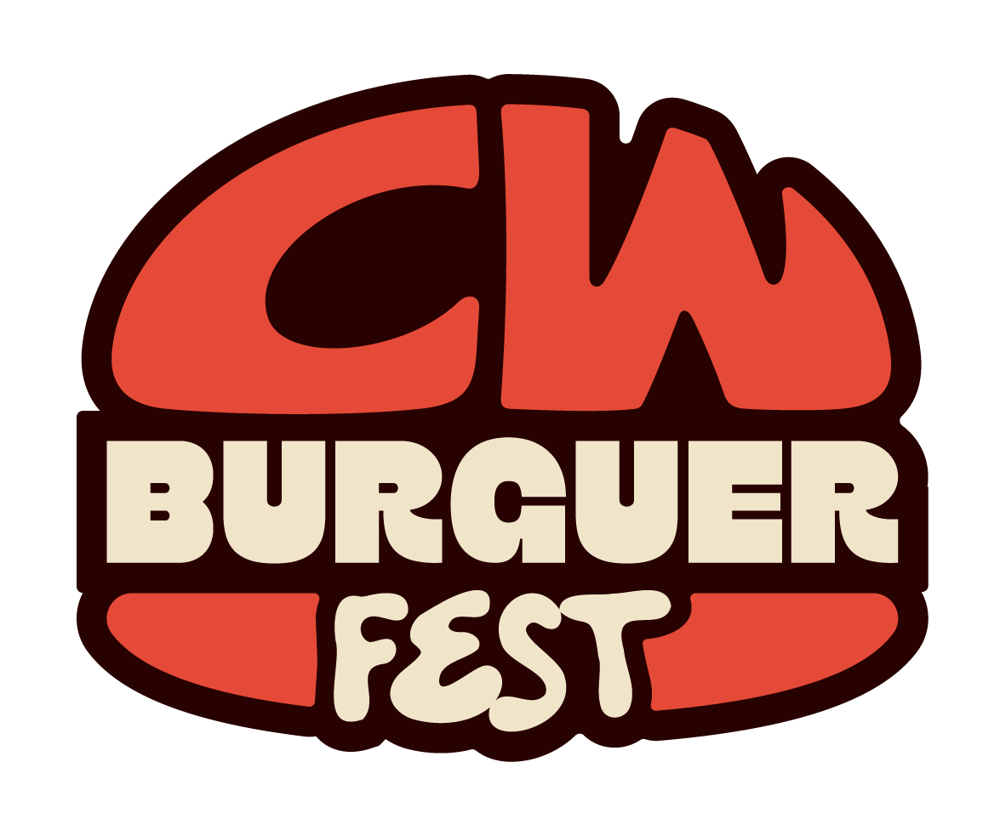
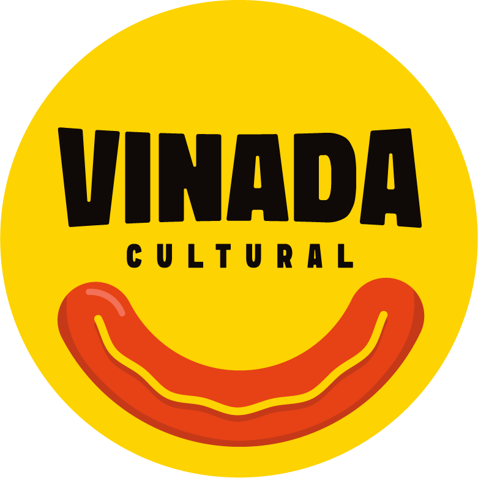

Produtos que conectam o ecossistema
Cada projeto é uma frente de negócio — e uma plataforma de live marketing pronta para patrocínio, ativação e participação. Escolha por onde quer levar a sua marca.
 ExperiênciaVendendo agora
ExperiênciaVendendo agoraFestival Bom Gourmet
O maior festival gastronômico do estado: menus exclusivos em dezenas de restaurantes.
Ver projeto
FestivalEm planejamentoCWBurguer Fest
O festival que celebra o hambúrguer de Curitiba e movimenta dezenas de operações.
Ver projeto CircuitoEm cartaz
CircuitoEm cartazCircuito de Inverno
Roteiro sazonal que aquece a economia gastronômica nos meses mais frios.
Ver projeto
CircuitoEm breveCircuito de Verão
A versão quente do circuito, levando experiências ao litoral e aos destinos de verão.
Ver projeto PremiaçãoEm planejamento
PremiaçãoEm planejamentoPrêmio Bom Gourmet
A mais importante premiação da gastronomia paranaense, eleita por especialistas e pelo público.
Ver projeto
NovoEm cartazVinada Cultural
Cultura curitibana, gastronomia democrática e música ao vivo na Praça Afonso Botelho — duas edições por ano.
Ver projeto

Qual projeto combina com a sua marca?
Nosso time monta a proposta ideal — de uma cota pontual a uma experiência sob medida.